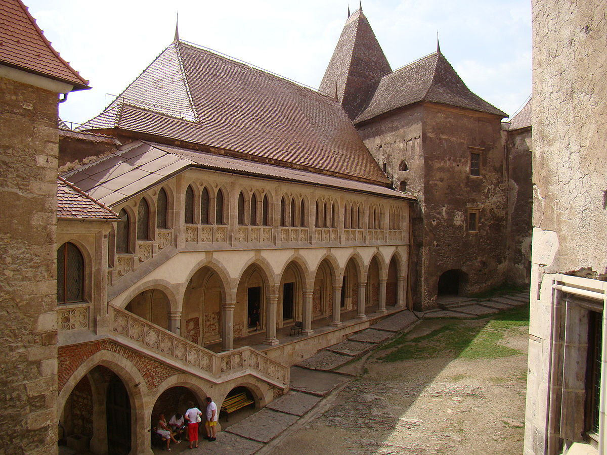

Descriere
Castelul Corvinilor, numit şi Castelul Huniazilor sau al Hunedoarei, este cetatea medievală a Hunedoarei, unul din cele mai importante monumente de arhitectură gotică din România. Este considerat unul dintre cele mai frumoase castele din lume, fiind situat în „top 10 destinaţii de basm din Europa”. Castelul Hunedoarei este cea mai mare construcţie medievală cu dublă funcţionalitate (civilă şi militară) din România aflată încă "în picioare". Castelul a fost ridicat în secolul al XV-lea de Iancu de Hunedoara pe locul unei vechi întărituri, pe o stâncă la picioarele căreia curge pârâul Zlaşti. Este o construcţie impunătoare, prevăzută cu turnuri, bastioane şi un donjon. Cetatea a fost una dintre cele mai mari şi vestite proprietăţi ale lui Iancu de Hunedoara. Construcţia a cunoscut în timpul acestuia însemnate transformări, servind atât drept punct strategic întărit, cât şi drept reşedinţă feudală. Cu trecerea anilor, diverşii stăpâni ai castelului i-au modificat înfăţişarea, îmbogăţindu-l cu turnuri, săli şi camere de onoare.
Ioan de Hunedoara inițiază, după 1440, construcții de mare amploare vizând transformarea cetății într-un castel, prima etapă cuprinzând ridicarea a două curtine în jurul vechii cetăți, construite din blocuri de calcar dolomitic, prevăzute cu creneluri la partea superioară. Aceste ziduri de curtina erau flancate de turnuri circulare și rectangulare, primele constituind o noutate pentru arhitectura militară a Transilvaniei secolului XV. Turnurile circulare (Turnul Capistrano, Turnul Pustiu, Turnul Toboșarilor), cu excepția turnului pictat (Turnul Buzdugan), erau prevăzute cu un parter din zidărie plină, urmat de două niveluri, cele de la partea inferioară fiind utilizate ca și camere pentru pușcași iar cele de la partea superioară ca și zone de locuit și/sau zone de apărare. De notat faptul că turnul Capistrano cuprinde singurul șemineu gotic (restaurat) din monumentul hunedorean. Turnul pictat (Turnul Buzdugan) are un singur nivel de aparare si este pictat în fresca la exterior cu motive geometrice și guri de tragere, cu corespondențe tipologice în spațiul german. Turnurile rectangulare plasate în zonele de nord-vest, respectiv sud-est ale castelului (turnul vechi de poarta, turnul nou de poarta) erau prevăzute cu intrări carosabile și niveluri de apărare, gândite atât pentru arme cu coarda cât și pentru arme de foc. Intrările propriu-zise în castel se făceau prin intermediul unor poduri, susținute de piloni de piatră, ultimele tronsoane ale podurilor fiind mobile. Un punct de interes în castel îl reprezintă fântâna, săpată în spațiul dintre curtina veche și cea noua. Se admite, în general, faptul că prima etapă de construcție a castelului se încheie înainte de 1446, moment la care Ioan de Hunedoara a devenit guvernatorul regatului Ungariei, modifică planurile de edificare ale castelului, în sensul creșterii ponderii construcțiilor civile.
